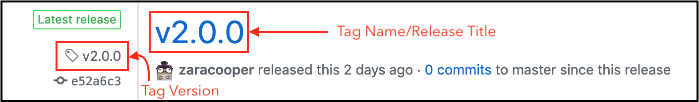
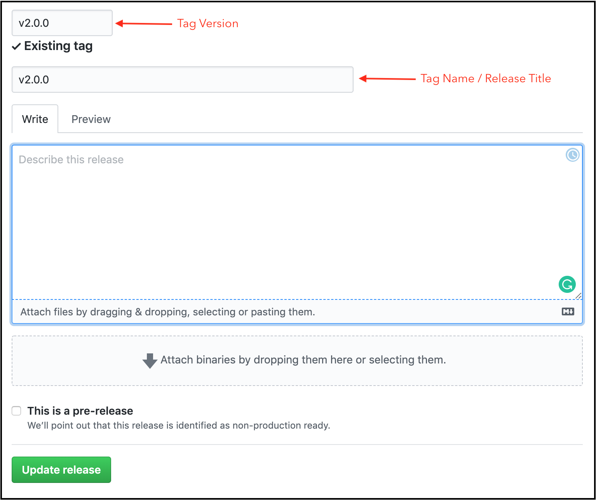

on
How to easily upgrade, downgrade, and migrate Go modules
Go 1.14 is officially out and module support is now production ready. This is an opportune time to migrate to modules. With a large codebase, upgrading, downgrading, and migrating to modules may seem like a daunting task because so many changes have to be made to the code. In this tutorial, with the help of this Recipe Puppy Go client module, I’ll walk through how to make module upgrades, downgrades, and migrations hassle-free.
What’s covered:
- Installing the
modtool - Upgrades and migrations
- Downgrades
- Upgrading dependencies
- Downgrading dependencies
Installing the mod tool
The mod tool makes upgrades and downgrades simple and quick. To install it:
- Set
$GOPATHif it has no value. - Add
$GOPATH\binto your$PATH. - Set
GO111MODULEtoon. Alternatively, you could set this value when installing the tool. Run:
go get github.com/marwan-at-work/mod
Upgrades and migrations
When using Go modules, any backward compatibility breaking changes require a major version upgrade. Migrating to modules is considered a breaking change and requires an upgrade of the major version. Other backward-incompatible changes can include deleting and modifying exported types, functions, constants, methods, and variables among other things. It’s important to have a clear picture of what backward-incompatible changes are to be made before deciding to upgrade.
In the case of the Recipe Puppy client, we’re going to change some function signatures in v1 from:
func FindRecipes(searchTerm string) ([]Recipe, error) {
...
}
func FindRecipesByIngredient(ingredient string) ([]Recipe, error) {
...
}
to this in the next version:
// this is a breaking change because the function arguments have been modified
func FindRecipes(recipeTitles []string, page int) ([]Recipe, error) {
...
}
// this is a new feature
func FindRecipesWithIngredients(recipeTitles []string, ingredients []string, page int) ([]Recipe, error) {
...
}
// this is a breaking change because the function arguments have been modified
func FindRecipesByIngredients(ingredients []string, page int) ([]Recipe, error) {
...
}
To upgrade to a new version:
- Identify your next major version eg.
v1→v2,v4→v5. In this instance, I’m upgrading fromv1tov2. Create a space for the new changes. This is done to comply with semantic import versioning. I’m using the major subdirectory method to release my
v2+ module. So I’ll create a newv2directory at the module root. If you are using the major branch method, create a new branch.mkdir v2Copy Go source files and the go.mod file from the current version to the new directory.
cp *.go v2/ cp go.mod v2/Upgrade to the new version. The
modtool will change all module and import paths in the Go source files and the go.mod to reflect the new major version number. In this case, the import pathgithub.com/zaracopper/recipepuppyinv1will change togithub.com/zaracooper/recipepuppy/v2forv2in the files copied over.cd v2 mod upgradeAdd the compatibility breaking changes to the source code. I added the aforementioned changes.
Write/modify tests to cover the breaking changes. Run the tests to make sure that they pass and that the code works as expected.
Tag the release if everything is stable. If you’d like more room to experiment with and test the new changes, tag it as a pre-release version. Use the
-mflag to provide an optional message describing the changes made to accompany your tag.git tag v2Push the tag.
git push origin v2
Github releases are different from Git tags. Github treats your tag as the title of the equivalent release. If you’re using Github, you can add the tag version on Github and even modify the release message.


Downgrades
Module downgrades can be a good idea in some situations. For example, maybe a severe bug was part of a new tag or maybe a developer is having second thoughts about making compatibility breaking changes or an incorrectly named tag was pushed to the origin repository. In most cases, however, downgrading a module would be a terrible idea because it may involve deleting a published tag and users may have already started consuming it. The best option when dealing with some of the aforementioned scenarios would be to publish a new tag or send out a patch.
That being said, if the tag hasn’t yet been published or consumption of the new release is limited, then downgrading a module would be okay. Downgrading involves:
Deleting the tag locally if one was already created.
git tag -d v2Downgrading the module. This will modify the module and import paths by removing the versions number from them or replacing it with the previous version number. For example, when downgrading the new
v2, module paths will change fromgithub.com/zaracooper/recipepuppy/v2togithub.com/zaracooper/recipepuppy.mod downgrade
Upgrading dependencies
New versions of dependencies are released constantly. In most cases, it’s always advisable to upgrade to take advantage of new features and keep up with patches. In large codebases, it may be daunting to upgrade if a dependency is used in multiple places. It’s even trickier when trying to upgrade more than one dependency at a time. Since it can get pretty complicated, some maintainers even opt for phased migrations when deciding to upgrade. An easy way to minimize the work involved is to change module and import paths in one fowl swoop. For example, to upgrade the github.com/jarcoal/httpmock test dependency when a v2 version comes out, all I’d have to do is:
mod upgrade --mod-name=github.com/jarcoal/httpmock
Downgrading dependencies
Sometimes using a new dependency may not work out and you may need to use a previous version that had worked better. A faster way to downgrade a dependency is to use mod downgrade. If I decided to downgrade github.com/jarcoal/httpmock, all I’d have to do is:
mod downgrade --mod-name=github.com/jarcoal/httpmock
Conclusion
Module support has been a godsend. However, it can involve a ton of work when it comes to enforcing semantic import versioning when making and using v2+ modules. The mod command is an amazing tool that makes migrations, downgrades, and upgrades faster and less taxing. I hope this was insightful.